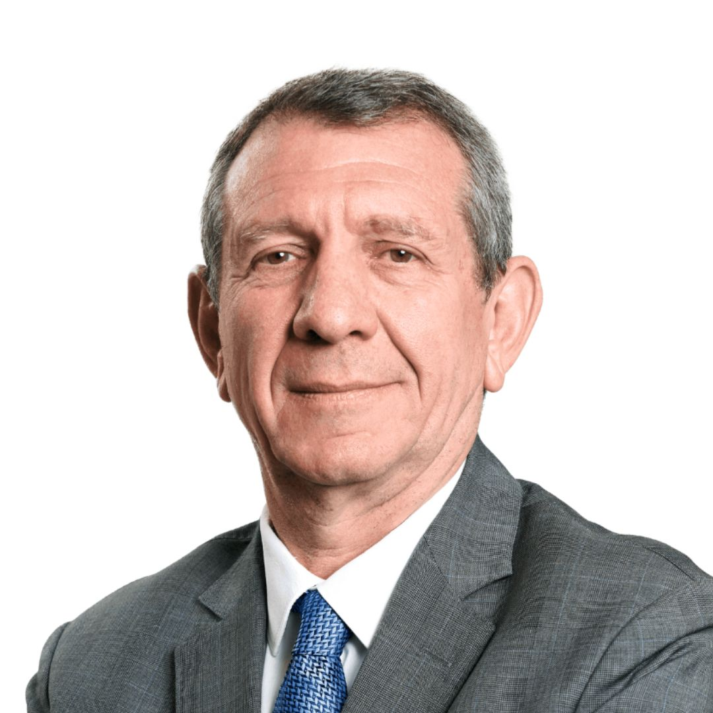
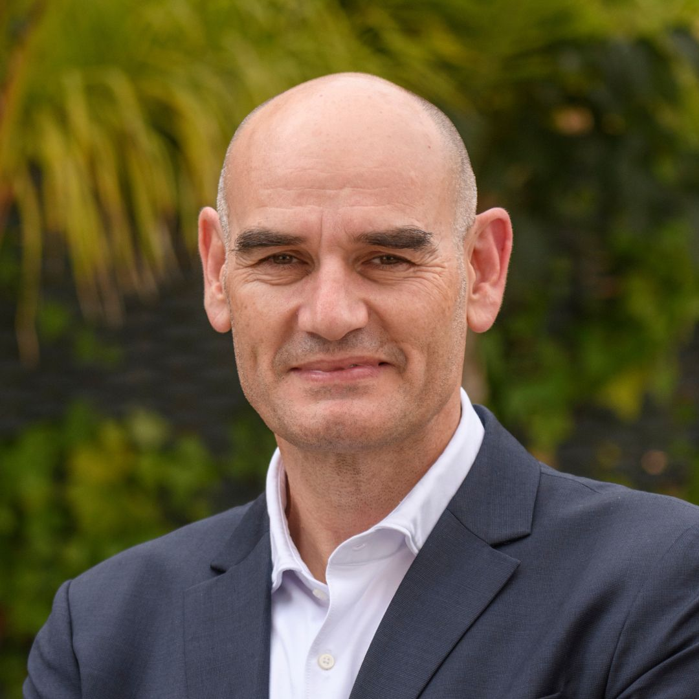
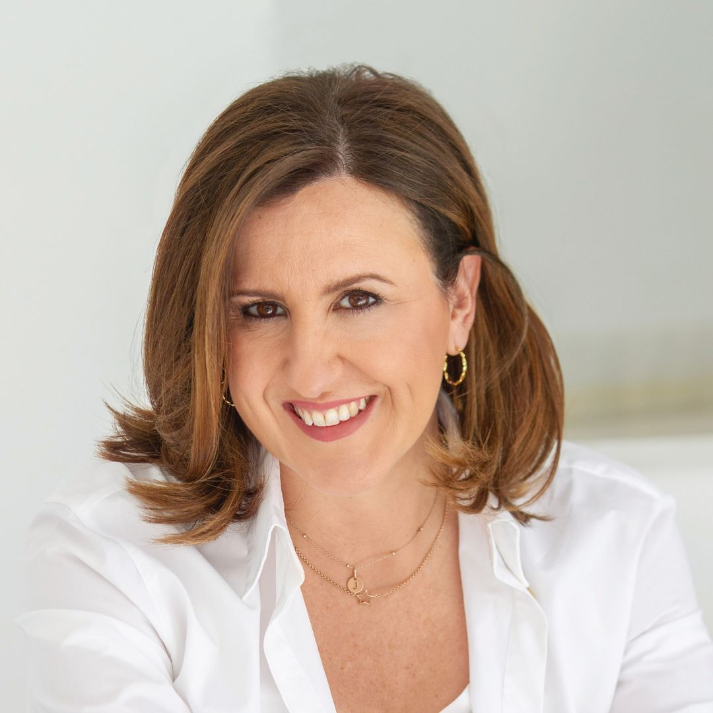
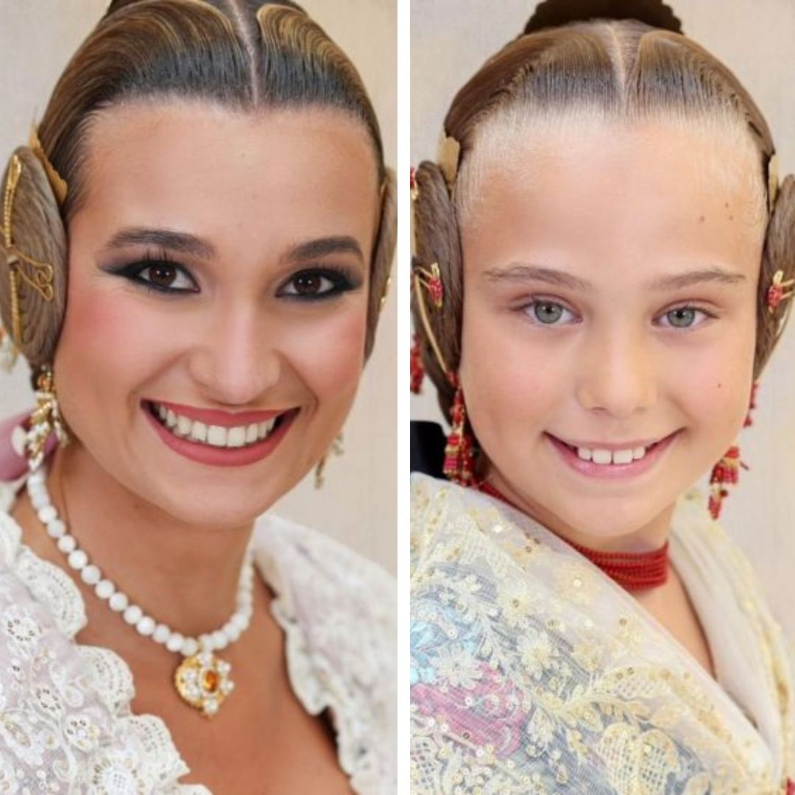

SALUDOS
Enrique Benavent Vidal
Arzobispo de Valencia

José Luis Restán Martínez
Presidente COPE

Enrique Aguado Aláez
Director COPE Comunidad Valenciana

María José Catalá
Alcaldesa de Valencia

Berta Peiró García y Lucía García Rivera
Fallera Mayor y Fallera Mayor Infantil de Valencia 2025